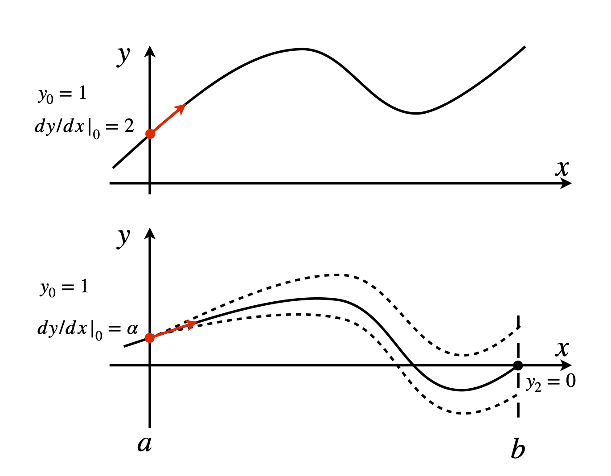
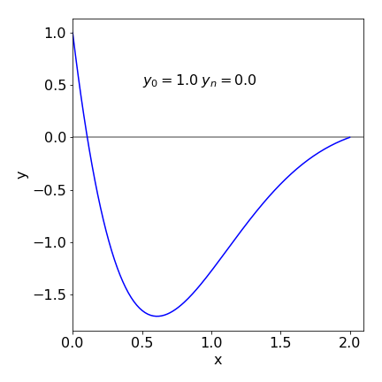
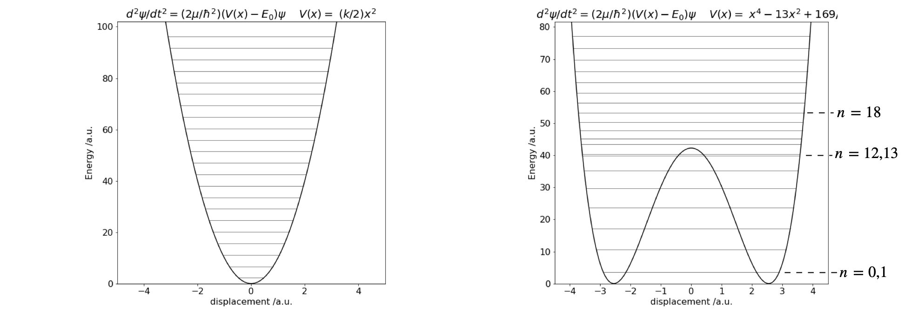
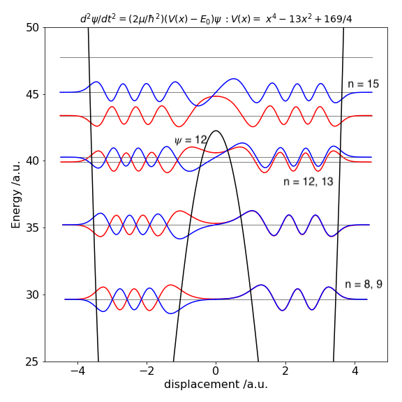
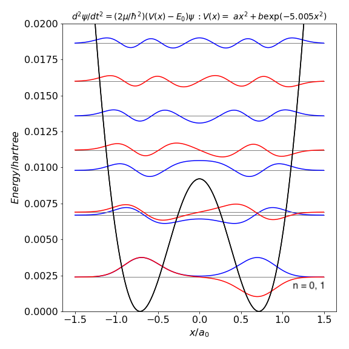

Boundary value problems.¶
%matplotlib inline
import numpy as np
import matplotlib.pyplot as plt
from scipy.integrate import odeint
from scipy.optimize import fsolve
from sympy import *
init_printing() # allows printing of SymPy results in typeset maths format
plt.rcParams.update({'font.size': 16}) # set font size for plots
Shooting method¶
The previous examples have been treated as initial value problems, but, in many cases, the equation being examined requires that the solution has predetermined value at two places, and a number of engineering and quantum mechanical problems have this restriction. Figure 25 illustrates, in a schematic way, the difference in the initial value and boundary conditions for a second-order equation; \(d^2y/dx^2 = f (x,y)\). The top sketch shows the two initial conditions chosen at \(x = 0\) to be \(y = 1\) and \(dy/dx|_0 = 2\); the gradient is shown as an arrow. The lower figure illustrates the situation if the boundary condition on \(y\) is one when \(x = 0\), and zero when \(x = 2\), which is the limit of the calculation; \(x\) can only range from \(0 \to 2\).
The only way to solve differential equations is to know what the initial conditions are. In the boundary value problem, the true initial gradient \(dy/dx|0 = \alpha\) and \(\alpha\) is unknown, but whose value will produce the required result that at \(x = 2,\; y = 0\). Initially \(\alpha\) has to be guessed, the calculation performed and then repeated with new guesses until the boundary condition is satisfied. Fortunately, this guessing can be made into an iterative process gradually homing in on the true value.

Figure 25. Initial value conditions (top panel), and boundary value conditions (lower panel). This shows three curves following three different initial values \(\alpha\), in addition to \(y_0 = 1\), only one of which achieves the boundary condition \(y = 0\) when \(x = 2\). The shooting method guesses/iterates to the correct initial value \(\alpha\) to satisfy the boundary condition
Suppose the equation we want to solve is the one examined before in Section 5.2,
but now with boundary conditions \(y_0 = 1\) and \(y_2 = 0\). This last condition means that the value of \(y\) is fixed at zero when \(x = 2\). Because this equation can only be solved with initial conditions, the condition \(y_2 = 0\) must be replaced with \(dy/dx |_0 = \alpha\), and \(\alpha\) must be found so that when the equation is solved, \(y_2 = 0\). The method to be used is a kind of trial and error techniques called shooting.
An outline shooting algorithm, using the particular initial conditions \(y_0 = a\) and \(y_2 = b\) is;
(1)\(\quad\) Set \(y_0 = a\). Guess initial \(\alpha\)
\(\qquad\) Set precision \(Q\) to restrict \(|y_{2\alpha} - b|\lt Q\)
\(\qquad\) Set loop limit in case no result is found.
\(\qquad\) Solve equation with guessed \(\alpha\) to get initial }\( y_{2\alpha}\)
(2)\(\quad\) Loop until \(|y_{2\alpha} - b|\lt Q\) or loop limit exceeded
\(\qquad\quad\) Numerically solve the equation in the range \(a \le x \le b\)
\(\qquad\quad\) Save \(y_{2\alpha}\) the value of \(y\) at \(x = 2\) found with value \(\alpha\)
\(\qquad\quad\) Update \(\alpha\)
\(\qquad\) Loop to (2)
(3)\(\quad\) Print result and plot data
The \(y\) value calculated at the last data point (\(x = 2\) in this case) is the boundary value \(y_{2\alpha}\) for each \(\alpha\), and this has to be stored after each solution and compared with the boundary condition \(y_2 = b\). A new value of \(\alpha\) is now chosen, and the new \(y_{2\alpha}\) compared with the boundary value; when the difference is small enough the calculation ends. Ideally, the difference between the estimated and true value is zero; therefore, this calculation is the same as numerically finding the root of an equation. The new value of \(\alpha\) is the root that can be found by linear interpolation (e.g. secant method), using the last two values calculated. Choosing the initial value of \(\alpha\) is quite an art. Some equations are ‘forgiving’ and a value close to \(y_0\) will produce a converging solution at the boundary; in other equations some experimenting with different \(\alpha\) values is needed before a solution is reached; the innocuous looking equation \(d^2y/dx^2 = 1/(1 + y^2)\) is difficult to solve unless \(\alpha\) starts close to zero and the next \(\alpha\) value chosen is also very small.
Before working out a specific example, it is worth noting that the boundary conditions and the equation can be written generally, and in numerical methods textbooks may appear as
The function \(f (x, y, dy/dx)\) simply means that the differential equation has terms in one or more of \(x,\; y\), and \(dy/dx\) such as \(d^2y/dx^2 + dy/dx + x^2 + y = 0\). The initial condition needed to solve this equation has the form \(dy/dx |_a = \alpha\); note that this is defined at \(a\), the initial point, and uses the value \(\alpha\) that must be found. The boundary condition \(y_b = s\) can be thought of as the non-linear equation \(y_b(\alpha) - s = 0\) in the parameter \(\alpha\), and this is the equation that has to be solved iteratively to find its root.
To implement the shooting algorithm, the differential equation has to be solved several times with different initial values. In this case, it makes sense to put this part of the calculation into a small procedure so that the same code does not have to be repeated in several places. A procedure is shown below and is based on Algorithm 14. This code is placed inside the procedure and the parameters needed are passed through the header. The equation to be solved, \(d^2y/dx^2 + 3dy/dx + 5y = 0\), is split into two coupled equations, in the usual way, as lambda functions.
The modified Euler method is made into a procedure as follows.
# Algorithm 17: modified Euler procedure for coupled equations
#----------------------------
def mod_euler(dydx, dzdx, xvals, x0, y0, z0, xn, n): # Modified Euler or RK2 method
Eulery = np.zeros(n,dtype=float) # define arrays for results
Eulerz = np.zeros(n,dtype=float)
h = (xn - x0)/n
x = x0 # initial values
y = y0
z = z0
Eulery[0] = y0
Eulerz[0] = z0
xvals[0] = x0
for i in range(1,n): # modified Euler
k1 = dydx(y,z)
L1 = dzdx(y,z)
k2 = dydx(y, z + L1*h)
L2 = dzdx(y + k1*h,z + L1*h)
y = y + h*(k1 + k2)/2
z = z + h*(L1 + L2)/2
x = x + h
Eulery[i] = y
Eulerz[i] = z
xvals[i] = x
pass
return Eulery,Eulerz
#-----------------------------
The procedure takes the functions \(dydx,\;dzdx\), and the \(x\) values and initial values and number of points to calculate. In the shooting method shown below the secant method is used to find the boundary values (section 2)
# Algorithm 18: Basic Shooting method
dydx = lambda y, z : z # define differential equations as functions
dzdx = lambda y, z : -3*z - 5*y
n = 200 # number of points
x0 = 0.0 # left hand boundary
xn = 2.0 # calculate to this boundary
y0 = 1.0 # left hand boundary, point a
yxn= 0.0 # boundary at xn
alpha0 = 0.0 # initial alpha guess dy/dx=alpha
alpha1 = 1.0 + alpha0 # guess initial value
Q = 1e-7 # choose limit on accuracy of bisection
xvals = np.zeros(n,dtype=float) # define array to hold x values
yvals,zvals = mod_euler( dydx, dzdx, xvals, x0, y0, alpha0, xn, n) # solve with initial alpha
yn0 = yvals[n-1] # initial value at right hand boundary xn
k = 0
while k < 5 and np.abs(yn0 - yxn) > Q: # start iterative loop to find solution
yvals,zvals = mod_euler( dydx, dzdx, xvals, x0, y0, alpha1, xn, n) # do integration here
yn1 = yvals[n-1]
alpha1= alpha1 -(yn1 - yxn)*(alpha1 - alpha0)/(yn1 - yn0) # secant method
alpha0= alpha1
yn0 = yn1 # end secant
k = k + 1 # loop counter
print('{:s} {:d} {:s} {:g}'.format('index = ', k,' error =',yn0 - yxn) )
pass
print('{:s} {:f}'.format('alpha_0',alpha0) )
#plt.plot(xvals, yvals,color='blue')
#plt.show()
index = 1 error = -0.0618948
index = 2 error = 6.5746e-16
alpha_0 -11.892761
The results are printed out at the end of the calculation; the number of iterations is limited to 5 to keep the calculation short; you can increase this. There is no check on the stability of the calculation; you will have check to see if \(\alpha\) is a sensible value by looking at the size of the error. If this is large, \(\gg Q\), then it may be necessary to choose another value of \(\alpha\) to start with. A good initial value can only be chosen by trial and error. ( Occasionally the secant method fails when \(yN1 - yN0 = 0\) and a very small value \(10^{-10}\) can be added to \(\alpha_l\) to prevent this.) The result of the calculation for equation 51 is shown in Figure 26 with the boundary conditions \(y_0 = 1\) and \(y_2 = 0\). The initial conditions satisfying these boundary conditions are \(y_0 = 1\) and \(\alpha = dy/dx |_0 = -11.89\).

Figure 26. Solution to boundary problem equation 51. The initial values \(y_0 = 1\) and \(dy/dx|0 = -11.9\) were calculated and are consistent with boundary values \(y_0 = 1\) and \(y_2 = 0\).
10 Numerical integration of the Schroedinger equation¶
In one dimension, the Schroedinger equation for a particle of mass \(m\) with an energy \(E\) in a potential \(V(x)\) is
The first term represents the kinetic energy, the second the potential energy with potential, \(V(x)\), and \(E\) is the total energy. At each of certain discrete energies, called the eigenvalues, this equation has a wavefunction that satisfies the condition \(\psi(x) \to 0,\; (x \to R)\) where \(R\) is a distance large compared to the extent of the potential at energy \(E\). However, at almost any value of \(E\) the equation has a solution, which means that it can be integrated to find \(\psi(x)\), but only when \(\psi(x) \to 0,\; (x \to R)\) does \(\psi(x)\) have a physical interpretation. The range \(R\) is taken to be the extent over which the particle can exist; while this is often \(\pm \infty\), as in a harmonic oscillator, it is \(\pm L/2\) in an infinitely high square well potential of length \(L\) and \(0 \to \infty\) for atoms. Once the energy \(E\) is determined then the wavefunction can be found. The Numerov method is an efficient way to do this but Runge-Kutta or the Euler methods can also be used provided a method is chosen with sufficient precision.
Imposing the physics onto the mathematics leads to a huge reduction in the number of possible solutions, but presents us with the interesting task of finding just those solutions that are physically meaningful. Suppose that \(\psi(x)\) is the value of a wavefunction of a (quantum) particle at some position \(x\). The word ‘particle’ is used generically; it might be, for example, an electron, a proton, a rotational, or a vibrational quantum of a molecule. One of the axioms of quantum mechanics is that the probability at time \(t\) of finding a particle between coordinate \(x\) and \(x + dx\) is \(\psi(x)^*\psi(x)\) and, since the particle must exist somewhere in the range \(-\infty \le x \le \infty\) , the total probability must be 1:\(\displaystyle \int_{-\infty}^{\infty} \psi(x)^*\psi(x)dx=1\). Because the probability over all space is 1, this ensures that that every wavefunction is zero at \(\pm \infty :\psi(x)\to 0,(x \to \pm \infty\)).
The derivative of \(\psi\) at infinity is also zero \(d\psi/dx|_\infty \to 0\). The wavefunctions only have this property at certain discrete values of \(E\), and these are called the eigenvalues. The shape of the wavefunction changes depending on the energy; for example, 1s, 2s, and 3s atomic orbitals do have different shapes, as do the wavefunctions of the harmonic oscillator or of the ‘particle in a box’.
Mathematically, the restriction \(\psi(x) \to 0, (x \to R)\) makes the integration of the Schroedinger equation a boundary value problem. In solving for the energies and wavefunctions of the hydrogen or other atoms where the wavefunction’s range is \(r = 0\cdots \infty\), and the wavefunction is not always zero at \(r = 0\), the spherically symmetric nature of the problem means that \(\psi(r)^*\psi(r)\) has to be multiplied by \(4πr^2\) to take into account the volume element of spherical coordinates. The probability density is then always zero at \(r = 0\) and at infinity.
In the numerical calculation, the discrete energies (eigenvalues) \(E\) in an attractive potential, such as a harmonic oscillator, can be estimated by several different methods. One of the easiest to use is the shooting method. Once an eigenvalue, which is energy, \(E\) is found either the Euler, or a more sophisticated numerical method can be used to find its wavefunction that is also called its eigenfunction.
Two boundary conditions \(\psi(x) \to 0, (x \to R)\) have to be translated into two initial values because the Schroedinger equation is second order. Suppose that one is \(\beta\), the value the wavefunction has at some starting point, for example at \(x = 0,\; \psi_0 = \beta\). The other value is the slope of the wavefunction at the same point; \(d\psi/dx |_0 = \gamma\). The quantities \(\beta\) and \(\gamma\) are derived shortly.
To integrate the equation, a shooting method can be used but in a slightly different manner to that described in Section 11.9. Because of the physics involved, the initial values of \(\psi\) and \(d\psi/dx\) can be fixed at the outset, and instead the calculation is performed by changing the values of \(E\) and the result checked to see if the boundary condition \(\psi(x) \to 0, (x \to R)\) is obtained at a given \(E\). If it is not, which is generally the case, \(E\) is incremented by a small amount and the calculation repeated. When the wavefunction changes sign at the boundary point, it has passed through \(\psi(x) = 0\) and an approximate value for the eigenvalue is found as the average of the last two values of \(E\), Figure 27. At this point the eigenvalue can be estimated more accurately if required, by bisecting the energy range between the last two calculations into smaller parts. When this first eigenvalue has been found, the energy \(E\) is then increased by a small amount and the next eigenvalue is sought, and so the eigenvalues are successively found with increasing energy. It is very important for an accurate determination of \(E\) that the precision with which the wavefunction approximates to zero at large \(x\) is very high. In the case of a double potential well, such as occurs in the ammonia inversion, if this is not the case energy levels that should be split by a small amount will, erroneously, have the same energy. Decreasing the value at which the bisection is terminated, therefore making the wavefunction closer to zero, will cure this. The stopping value \(Q\) may ultimately need to be as small as 10-8; see Algorithm 18.
The calculation does not have to be carried out to \(x = \infty\). Clearly this would be impossible, and an effective infinity is used instead. This is estimated from the shape of the potential; as a rule of thumb, extending the \(x\) value in the calculation to twice the width of the potential at the maximum energy to be calculated is usually sufficient. The exception is the particle in the box, where this extends only to the edge of the box.
Figure 27. A schematic of two wavefunctions at two energies neither of which is an eigenvalue. A wavefunction is the solution to the Schrödinger equation and if, at the boundary, \(\psi(x) \to 0\), then \(E\) is an eigenvalue and the wavefunction an eigenfunction. The wavefunction calculated with energy \(E_n\) is positive and that with energy \(E_{n+1}\) negative; the true energy eigenvalue is between these two values and will produce the true wavefunction with its value of zero at the boundary.
10.1 The Shooting Method with a quadratic potential¶
Eigenvalues and wavefunctions¶
In solving the Schroedinger equation is is necessary to re-write it into a more convenient form and also split it into to equations as done with previous examples of second order equations. Rearranging produces
then
As an example, suppose that the potential \(V\) in the Schroedinger equation is quadratic \(V(x) = kx^2/2\), which is symmetric and centred on zero. The value of the force constant \(k\) is known from spectroscopic experiments for many molecules, e.g. 516 N m-1 for HCl and 172.1 N m-1 for I2, so that the calculation can be checked with known values of the energy levels, which are spaced as \(\hbar \omega(n + 1/2)\) with \(\omega = \sqrt{k/\mu}\) if \(\omega\) is in radians s-1 and \(\mu\) is the reduced mass in kg.
The calculation starts by solving the Schroedinger equation for \(\psi\) at zero energy and \(x = 0\), which happens to be at the lowest point of the potential, and \(E\) is incremented by a small amount and at each new value the sign of the wavefunction at the boundary is checked. The energy is incremented until \(\psi\) changes sign. When this happens an eigenvalue has been passed and the energy \(E\) of the eigenvalue is between these last two values. The bisection method is now used to find an accurate value of the eigenvalue. This is a very stable method but takes several steps to reach the minimum for a given level of precision; the slowness of this method is more than compensated for by its stability because the Newton - Raphson or secant methods are rather subject to instability and can miss eigenvalues. A new energy is now chosen just above the last one found and a new eigenvalue sought and so forth, until the maximum energy required has been reached. The energy increments must be small enough not to miss an eigenvalue but not so small that the calculation takes an inordinate length of time, so some knowledge of the likely energy spacing, based on your knowledge of the chemical physics involved, is going to be useful.
Eigenvalues¶
The solutions of the Schroedinger equation in a symmetrical potential have either an ‘odd’ or ‘even’ parity, meaning that the wavefunction is either symmetrical and has a mirror image about the y-axis, or non-symmetrical and has instead a centre of inversion. If the wavefunction is of even parity then \(\psi(x) = \psi(-x)\) and is finite at the origin but has zero slope; the initial condition is therefore
If the wavefunction is odd, then \(\psi(x) = -\psi(-x)\) and its value at the origin \(x = 0\) must be zero, but its gradient has constant value; therefore
The number 1 is used in these initial values as it only defines the size of the wavefunction. As \(\psi\) can be normalized at the end of the calculation these values are not critical. The zeros reflect the odd - even parity and are essential.
For simplicity, Planck’s constant and the reduced mass are set equal to unity, see later how to use atomic unit. If the harmonic potential is \(V(x) = 10x^2\), the force constant \(k =20\) and with quantum numbers \(n = 0, 1, 2 \cdots\) , the eigenvalues are \(\sqrt{20}(n + 1/2)\), which allows an easy comparison with the calculated values. The accuracy of the integration depends not only on the number of steps taken, as with all other integrations, but also on having an accurate integration method. In this example the Numerov method was used, algorithm 16a. Because any method is going to be called several times in the calculation it is placed into its own procedure. The potential to be used is passed into the procedure so this can be used for other symmetric potentials.
The code used is shown below. Using this code, even and odd eigenfunctions are calculated. To calculate odd numbered ones, the initial value \(y_0\) has to be changed 0 and \(dy/dx = 1\), see equation 53. Note also that this code will only work properly if the potential is positive; if it is negative then a constant should be added to make its lowest value zero and then subtracted from the final eigenvalues.
# Algorithm 19; Shooting method used to solve the Schroedinger equation.
#--------------
def solve_SE(V, init0, init1, E0): # dpsidx = v, dvdx = 2mu/(hbar^2)(V-E)*psi
def derivs(y,x): # y =[init0,init1]
dvdx = lambda x: (2.0*mu/hbar**2)*( V(x) - E0 )*y[0] # potential varies with x
dpsidx= y[1]
return dpsidx, dvdx(x)
y = odeint( derivs, [init0, init1], x) # Numpy/Scipy method : derivatives, initial values , x.
return y # shape= [n,2], y= wavefunction at energy E0
#------------
k = 20.0 # force constant
V = lambda x: k*(x**2)*0.5 # harmonic potential
mu = 1.0 # mass
hbar = 1.0
n = 1000 # num points
x0 = 0.0 # initial x
xN = 5.0 # boundary or infinity x
x = np.linspace(x0,xN,n) # start, stop & number of points
yxN = 0.0 # boundary value at maxN
deltaE = 1.0 # energy increment, must be less than sep'n of energy levels
maxE = 100.0 # max energy
Q = 1e-13 # stopping value
xf = xN
Qnum =[] # arrays to hold results
Eigval=[]
for indx in [0,1]: # do odd-even values
En0 = 0.0 # starting energy
Qn = indx # even/odd quantum number
dydx= indx*1.0 # initial dy/dx guess
y0 = 1.0 - indx # y0 even quantum num, any value here is ok except 0
y = solve_SE(V,y0,dydx,En0) # get all y values at energy En0
yN0= y[n-1,0] # save point at boundary i.e. at xN
En1= En0 + deltaE # second try with energy
while En1 < maxE : # keep on to max energy
y = solve_SE(V, y0, dydx, En1) # solve at energy En1
yN1= y[n-1, 0] # save point at boundary
if yN1*yN0 < 0.0 : # check if zero crossed
# ** start bisection method **
while abs(En1 - En0) > Q : # difference in energy>Q
Em =(En1 + En0)/2.0 # mid point
y = solve_SE(V, y0, dydx, Em) # recalc at energy Em. y is wavefunction
ym = y[n - 1,0] # y at boundary
if yN0*ym > 0: # check sign of y (wavefunction)
En0 = Em
else:
En1 = Em
pass
pass # end of while abs()
Qnum.append(Qn) # save results
Eigval.append(En1)
yN0 = yN1 # replace for next calc
Qn = Qn + 2 # increase quantum num
pass
# ** end bisection **
En0 = En1
yN0 = yN1 # replace for next calc
En1 = En1 + deltaE # new energy
pass
pass
print('{:s}'.format(' Q num, eigenvalue Q num, eigenvalue'))
s=len(Qnum)//2
for i in range(s):
print('{:5d} {:12.6f} {:5d} {:12.6f}'.format( Qnum[i], Eigval[i],Qnum[i+s], Eigval[i+s])) # results
Q num, eigenvalue Q num, eigenvalue
0 2.236068 1 6.708204
2 11.180340 3 15.652476
4 20.124612 5 24.596748
6 29.068884 7 33.541021
8 38.013156 9 42.485292
10 46.957428 11 51.429563
12 55.901700 13 60.373834
14 64.845972 15 69.318106
16 73.790244 17 78.262378
18 82.734515 19 87.206651
20 91.678788 21 96.150921
The eigenvalues for two different potentials are shown in Fig. 28. The harmonic \(V(x) = (k/2)x^2,\; k=20\) and the double well, \(V(x) = x^4 - 13x^2 + 169/4\), which has a minimum of zero and a barrier height of 42.25. A few eigenvalues for the harmonic potential are listed below, and the agreement between the numerical and exact eigenvalue energy is good to at least five decimal places.
The code used the shooting method with Python/Scipy method ‘odeint’ to integrate the Schroedinger equation. For simplicity the mass and \(\hbar = 1\). The calculation using atomic units is described in section 10.2.

Figure 28 Potential energy and eigenvalues. Left the harmonic potential \(V(x) = 10x^2\). Right The double well potential \(V(x) = x^4 - 13x^2 + 169/4\).
The eigenvalues for the double well show a splitting below the barrier, as expected, because the two wells interact. However, the difference in energy is very small lower down in the well, and the levels are, in this particular potential, effectively accidentally degenerate. Only near the top of the barrier are two closely spaced levels visible in the plot, with quantum numbers \(n = 12\) and \(13\). This is because the barrier is narrow here and there is more interaction between the two halves of the potential. Above the barrier, the potential is suddenly wider and the energy levels now become closer together. Crudely, this can be thought of in a similar way as an infinite square well or ‘particle in a box’. A wide well has energy levels closer together than a short one. As the potential energy increases, so does the separation between eigenvalues, just as happens in the square well.
The harmonic potential is unusual because as the energy increases so does the width of the well and it does so in such a way that the energy separation between adjacent levels is constant. In comparison in the infinite square well, adjacent levels separate by ever-increasing amounts as the energy increases. In a potential such as \(|x^{3/2}|\), the level separation decreases with an increase in energy as they also do in the hydrogen atom, where the potential is proportional to \(1/x\), or in the anharmonic oscillator with the Morse potential. The difference in the spacing between energy levels the harmonic and double well potentials is shown in Fig. 11.28. In the double well potential below an energy of \(30\) units, the well is narrow, which means it effectively has a large force constant causing the energy levels to be widely spaced, compared to the harmonic potential which is wider, at the same energy, and therefore has a smaller force constant. Well above the barrier, the widths of the double and harmonic potential gradually become similar and the energy spacings are now also more similar to one another.
Wavefunctions¶
Once the eigenvalues are known the wavefunctions have also effectively been calculated, see Algorithm 11.18. Depending on the method used one half of the wavefunction can be calculated then its image used to form the other half or the whole may be calculated in one go. This is possible because in a symmetrical well the left half is either the mirror image or the inverse mirror image of the right half. Figure 11.29 shows some of the wavefunctions, eigenvalues, and the double well potential of Fig. 11.28.
At low energy, far below the barrier top, the eigenvalues \((E_0, E_1),\; (E_2, E_3)\), etc. are grouped in pairs with a nearly identical energy because the barrier almost, but not quite, separates the two wells. The lowest two eigenvalues have energy \(3.5661\) and the next two have energy \(10.5327\), both pairs being similar to within eight decimal places. Levels \(10\) and \(11\) are separated by slightly more energy: \(35.1961\) and \(35.2167\) respectively, which is still small. Levels \(12\) and \(13\), which are shown in the figure, have just enough of an energy difference (\(39.9156\) and \(40.22768\)) to be seen as separate levels. The wavefunctions with small quantum numbers, \(0 \le n \le 9\), are rather like those of two separated wells but still have odd and even parity overall, as does each half. The \(n = 13\) wavefunction, Figure 29, has odd parity with a centre of inversion at \(x = 0\), and it is clear that there is little chance of finding the molecule at zero displacement. It has to tunnel from one well to the other; an effect famously observed in the ‘umbrella’ mode of ammonia inversion. The \(n = 8\) wavefunction similarly exhibits tunnelling, as do all levels below the barrier. As the barrier gradually lessens, the eigenvalues separate as shown for \(n = 12\) and \(13\). Some memory of the barrier can still be seen in the \(n = 15\) level, which above the barrier has an increased amplitude of the wavefunction at a displacement \(x \approx \pm 3/4\).

Figure 29. Eigenvalues and wavefunctions vs displacement \(x\) for quantum number 8 to 15 superimposed on the double well potential of Figure 28. The eigenvalues with \(n = 8\) and \(9\) are too close to separate on this figure, as are \(10\) and \(11\).
10.2 Energy levels of the ammonia inversion normal mode calculated using atomic units¶
A more realistic example is to calculate the energy levels for ammonia; this also illustrates how to use atomic units to control the huge or tiny numbers present in quantum calculations.
The potential energy (Swalen & Ibers 1962), \(V\), of the umbrella or tunnelling normal mode vibration, measured as the displacement \(x\) of the N atom from the plane of the H atoms, assuming a \(C_{3V}\) point group, is approximated by
The displacement \(x\) is in \(\overset{\text{ o}} A\). The eigenvalues and their spacing will be calculated up to an energy of \(4000\;\mathrm{cm^{-1}}\), which is above the barrier.
The normal SI units for Planck’s constant and the reduced mass are difficult to use because they generate very large or very small numbers. Converting to atomic units greatly simplifies the calculation. This is done by using an energy scale in hartree, where 1 hartree is \(2.1947465225 \cdot 10^5\;\mathrm{cm^{-1}}\) or \(27.211396\) eV, and the corresponding distance scale, is in units of the Bohr radius \(a_0\), which is \(0.529177 \cdot10^{-10}\) m. The hartree is the natural unit of energy and is \(e^2/(4\pi\epsilon_0a_0)\), where \(\epsilon_0\) the permittivity of free space and \(e\) the charge on the electron. The constants in the Schroedinger equation now become \(\hbar^2/m_e = 1\), where \(m_e\) is the mass in kg of the electron and therefore for the reduced mass \(\mu\) (kg) of the molecular vibration, the ratio
is used. The schroedinger equation is now
where displacement \(x\) is now in units of \(a_0\), and energy in hartree, which means that \(E\) is in hartree. The potential has to be changed to achieve this and becomes
Plotting this potential shows that the calculation needs an \(x\) range of 0 to \(2a_0\) and an energy scale up to 0.02 hartree, Figure 30. The potential is essentially parabolic, except for the low and Gaussian shaped barrier of \(\approx 0.0094\) hartree (\(2063\;\mathrm{cm^{-1}}\), centred at zero, which produces two energy minima at \(\pm 0.723 a_0\).
In the numerical calculation, energy increments of no more than 0.001 are needed to determine all the levels accurately. The reduced mass is assumed to be that of three hydrogen atoms acting as one mass, and the nitrogen atom. The masses in kg are
\(\displaystyle m_H = 1.673534 \cdot 10^{-27},\; m_N = 2.325267 \cdot 10^{-26}, \; m_e = 9.1093819 \cdot 10^{-31}\),
making \(\mu/m_e = 4532.769\).

Figure 30. Calculated energy levels and potential energy function for the inversion or ‘umbrella mode’ vibration in ammonia. The \(n\) = 0 and 1 levels are split but are too close to be drawn separately. The \(n=2\) and 3 levels are just separated by enough energy to be seen individually. The \(n=4\) level is just above the barrier’s top.
The first few energy levels (cm\(^{-1}\)) are
Four levels, as two closely spaced pairs, appear in the double well part of the potential. Here the inversion mode tunnels through the barrier. Above the barrier there are single levels, see Figure 30. The results show only a moderately good agreement between theory and experiment, see table below. However, the fitting is very sensitive to the parameters of the potential; a change in the potential far too small to see by eye will cause large changes in the calculated energy levels. A more sophisticated calculation would vary the parameters in the potential optimally to fit the data. A further sophistication would add terms in \(x^4\) to the potential, but doing this eventually becomes an exercise in fitting the data to an arbitrary potential that may not have any physical reality. Preferably, the potential should be derived from an ab initio analysis of the motion of the atoms, rather than assuming the potential shape has a certain form; this is, however, a very difficult calculation.
The energy gaps, in cm\(^{-1}\), compared with the spectroscopically determined values are shown below. As can be seen the fit is quite good considering the simplicity of the potential and does show the general features of the spectrum but is by no means accurate. If you try fitting by changing the potential you will find that one value mat fit well at the expense of others and that only a general fit can be obtained. This compromise is the general feature when the fitting function does not describe the data properly.